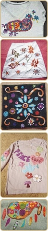
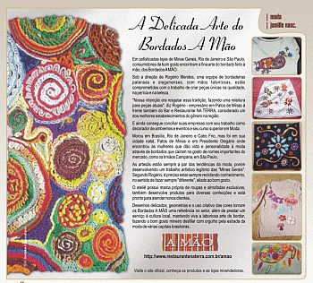
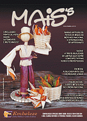

Em sofisticadas lojas de Minas Gerais, Rio de Janeiro e São Paulo, consumidores de bom gosto encontram a fina arte do bordado feito à mão, dos Bordados A MÃO.
Sob a direção de Rogério Mendes, uma equipe de bordadeiras patenses e olegarienses, com mãos talentosas, estão comprometidas com o trabalho de criar peças únicas na qualidade, na perícia e na beleza.
"Nossa intenção era resgatar essa tradição, fazendo uma releitura para peças atuais". diz Rogério - empresário em Patos de Minas à frente também do Bar e Restaurante NA TERRA, considerado um dos melhores estabelecimentos do gênero na região.
E ainda consegue conciliar suas empresas com seu trabalho como decorador de ambientes e eventos e seu curso superior em Moda. Morou em Brasília, Rio de Janeiro e Cabo Frio, mas foi em sua cidade natal, Patos de Minas e em Presidente Olegário onde encontrou as mulheres que dão vida e personalidade à moda através de bordados que cairam no gosto de nomes importantes do mercado, como os Irmãos Campana, em São Paulo.
As artesãs estão sempre a par das tendências da moda, porém desenvolvendo um trabalho artístico legítimo das "Minas Gerais". Segundo Rogério, é preciso estar sempre reciclando conhecimento, no sentido de fazer sempre "diferente", aliado ao bom gosto.
O ateliê possui marca própria de roupas e almofadas exclusivas, também desenvolve produtos para diversas confecções e está pronto para atender novos clientes.
Desenhos delicados, geometrias e o uso criativo das cores tornam os Bordados A MÃO uma referência no setor, além de prestar um serviço à cultura local, mantendo viva a laboriosa arte de bordar, fazendo o bom gosto mineiro desfilar com orgulho pela estrada da moda de várias capitais brasileiras.